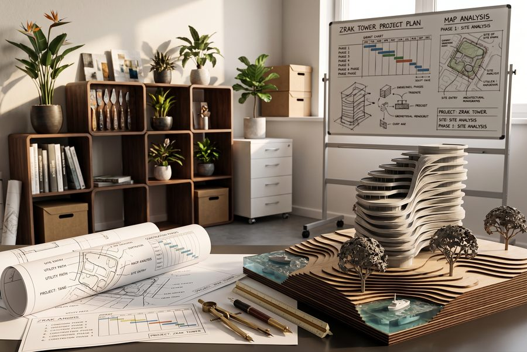

Usluge /
Arhitektura, dizajn enterijera i vizualizacija
Radimo arhitekturu, dizajn enterijera i vizualizaciju, od prve ideje do nadzora na gradilištu. Jedan studio vodi projekat kroz projektovanje, dozvole i gradnju, pa se ništa ne gubi između faza. Van Srbije radimo zajedno sa vašim lokalnim arhitektom.

Šta radimo /
Sedam usluga, jedan studio
01Idejno rešenje i konceptAnaliza lokacije / Paterni / Volumen i forma
Vaš zadatak pretvaramo u jasnu prostornu strategiju, počevši od paterna lokacije i načina na koji će se objekat koristiti. Ova faza obuhvata analizu lokacije, urbanističke uslove i prva rešenja: raspored, volumen i odnose među prostorima.
Analiza lokacije
Topografija, orijentacija, pogledi, prilaz i planska pravila koja važe za parcelu.
Paterni
Odnosi svetla, kretanja, privatnosti i okupljanja koji se ponavljaju i na koje projekat mora da odgovori.
Volumen i forma
Rani 3D modeli kojima proveravamo volumene na lokaciji, i forma koja proizlazi iz paterna.
02Razrada projekta i 3D modelovanje3D model kao osnova / Usklađivanje sa strukama / Specifikacija materijala
Projekat razrađujemo u preciznom 3D modelu u Rhino-u. Biraju se materijali, a konstrukcija i instalacije usklađuju se sa projektantima drugih struka, pa se spojevi rešavaju u modelu pre nego što stignu na gradilište.
3D model kao osnova
Svaka mera se proverava u 3D-u, a osnove, preseci i izgledi uzimaju se iz modela.
Usklađivanje sa strukama
Konstrukcija i instalacije proveravaju se u odnosu na arhitekturu u svakom koraku.
Specifikacija materijala
Obrade i sistemi birani prema izgledu, ceni i načinu ugradnje.
03Arhitektonska vizualizacijaIdejne vizualizacije / Studije materijala i enterijera / Prezentacione slike
Fotorealistične slike, od prvih studija volumena do konačnog izbora materijala. Vizualizacije nastaju iz istog 3D modela kao i crteži, pa je ono što odobrite upravo ono što se dokumentuje.
Idejne vizualizacije
Rane slike kojima proveravamo volumen, svetlo i atmosferu pre nego što se rešenje utvrdi.
Studije materijala i enterijera
Krupni prikazi obrada, nameštaja i osvetljenja, da se odluke donose sa sigurnošću.
Prezentacione slike
Slike visoke rezolucije za investitore, zahteve za dozvole i prodaju.
04Tehnička dokumentacija i inženjeringArhitektonski crteži / Detalji / Dokumentacija za dozvole
Crteži, specifikacije i tabele po kojima izvođači mogu da daju cenu i grade. Pažljivo razrađeni detalji znače tačnije ponude, manje izmena na gradilištu i dokumentaciju koja ispunjava važeće propise.
Arhitektonski crteži
Osnove, preseci i izgledi sa merama i napomenama koje su izvođaču potrebne za ponudu.
Detalji
Crteži spojeva, termičkog omotača i hidroizolacije, gde počinje većina problema na gradilištu.
Dokumentacija za dozvole
IDR, PGD i PZI u skladu sa važećim propisima, sa predajom kroz sistem CEOP.
05Arhitektonski nadzorObilasci gradilišta / Pregled dokumentacije izvođača / Tehnička pitanja i izmene
Nakon izdavanja građevinske dozvole klijenti nas mogu angažovati za nadzor nad izgradnjom naših projekata. Obilazimo gradilište, pregledamo dokumentaciju izvođača i odgovaramo na tehnička pitanja, da se objekat izgradi onako kako je projektovan.
Obilasci gradilišta
Redovni obilasci radi provere da li se radovi izvode prema odobrenom projektu i dokumentaciji.
Pregled dokumentacije izvođača
Provera radioničkih crteža i uzoraka materijala u odnosu na specifikaciju.
Tehnička pitanja i izmene
Odgovori na pitanja izvođača i procena predloženih izmena u odnosu na odobreni projekat.
06Enterijer i detalji po meriStolarija po meri / Osvetljenje / Materijali i okovi
Arhitektonsku ideju prenosimo u enterijer: stolarija po meri, osvetljenje i izbor materijala, da objekat i njegov enterijer deluju kao jedna celina.
Stolarija po meri
Ormari i ugradni elementi crtani prema geometriji svakog prostora.
Osvetljenje
Plan osvetljenja koji prati način korišćenja prostora, danju i noću.
Materijali i okovi
Završne obrade, oprema i okovi koji slede arhitektonsku ideju.
07Studije izvodljivosti i master planiranjeKapacitet lokacije / Varijante i gustina / Fazna gradnja
Za veće lokacije proveravamo šta može da se izgradi pre nego što projektovanje počne: koliko površine dozvoljavaju planska pravila, kako se ona raspoređuje na zemljištu i kojim redom može da se gradi. Sopstveni alati zasnovani na paternima omogućavaju nam da u ovoj fazi uporedimo mnogo varijanti, sa površinama i indeksima jednu pored druge.
Kapacitet lokacije
Najveća površina za gradnju po planskim pravilima i ograničenja koja je umanjuju.
Varijante i gustina
Više rasporeda sa površinama i indeksima, da investitor može da ih uporedi kroz brojke.
Fazna gradnja
Veliki razvoj podeljen na etape koje mogu da se finansiraju i grade jedna za drugom.
Proces /
Kako radimo
Prvi razgovor
Razgovaramo o lokaciji, zadatku, budžetu i rokovima i proveravamo planska pravila koja važe za parcelu.
Ponuda
Pisani obim usluga, faze i cena, da znate šta dobijate u svakoj etapi.
Koncept
Paterni lokacije i zadatka, zatim volumeni, rasporedi i prve vizualizacije, koje sa vama doterujemo dok se pravac ne usvoji.
Razrada projekta
3D model razrađujemo zajedno sa projektantima konstrukcije i instalacija, uz specifikaciju materijala i kontrolu troškova.
Dozvole i dokumentacija
Idejno rešenje (IDR), projekat za građevinsku dozvolu (PGD) i projekat za izvođenje (PZI), kao i dokumentacija za izbor izvođača.
Na gradilištu
Arhitektonski nadzor, pitanja izvođača i kontrola izmena do primopredaje.
Pitanja /
Najčešća pitanja
01Da li radite sa klijentima van Srbije?
Da. Idejno rešenje, dizajn enterijera i arhitektonska vizualizacija mogu se raditi potpuno na daljinu, uz video sastanke na engleskom jeziku. Za objekat van Srbije sarađujemo sa vašim lokalnim arhitektom koji vodi dozvolu u toj državi. Za projekte u Srbiji vodimo ceo postupak.
02Šta podrazumevate pod paternima?
Paterni su odnosi koji se ponavljaju u dobrim objektima i mestima: kako ulazi svetlo, kako se prilazi, gde se ljudi okupljaju a gde se povlače, kako objekat dodiruje tlo. Za svaku lokaciju ih proučavamo pre nego što nacrtamo formu. Metod potiče iz našeg sopstvenog istraživanja, a od njega razvijamo i sopstveni softver za projektovanje.
03Šta vam je potrebno da biste počeli projekat?
Lokacija parcele ili nekretnine, dokumenta koja već imate, kratak opis onoga što vam treba, okvirni budžet i željeni rok. Ako nemate sve, pošaljite ono što imate, pa ćemo zajedno dopuniti zadatak.
04Kako se dogovara cena?
Pre početka rada dobijate pisanu ponudu sa obimom usluga, fazama i cenom svake faze, tako da u svakom trenutku znate šta dobijate i koliko košta.
05Koliko traje izrada projekta?
Zavisi od veličine i složenosti projekta i od postupka izdavanja dozvola. Koncept obično traje nekoliko nedelja, a kompletna dokumentacija nekoliko meseci. Dinamiku dajemo u ponudi i ažuriramo je kako projekat odmiče.
06Šta je CEOP i kako utiče na moj projekat?
CEOP je centralni sistem za elektronsko podnošenje zahteva za građevinske dozvole u Srbiji. Dobro poznajemo propise i postupak, pa put do dozvole planiramo od prve skice i pripremamo dokumentaciju koja ispunjava uslove.
07Da li vršite nadzor nad izgradnjom?
Da, na našim projektima. Nakon dobijanja građevinske dozvole klijenti nas mogu angažovati za arhitektonski nadzor: obilaske gradilišta, pregled dokumentacije izvođača i odgovore na tehnička pitanja. Mi smo arhitekte, a ne izvođač, pa ne gradimo.
08Da li radite i samo enterijer?
Da. Stanovi, restorani, kafei i klinike redovan su deo našeg rada. Projektujemo raspored, stolariju po meri, osvetljenje i materijale, a pripremamo crteže i vizualizacije po kojima izvođač može da radi.
09Koje programe koristite?
Modelujemo u Rhino-u. Svaki objekat proveravamo u preciznom 3D modelu, iz njega uzimamo osnove, preseke i izglede koje dorađujemo kao tehničke crteže, a vizualizacije nastaju iz istog modela. Uz to razvijamo sopstvene alate za projektovanje zasnovano na paternima.